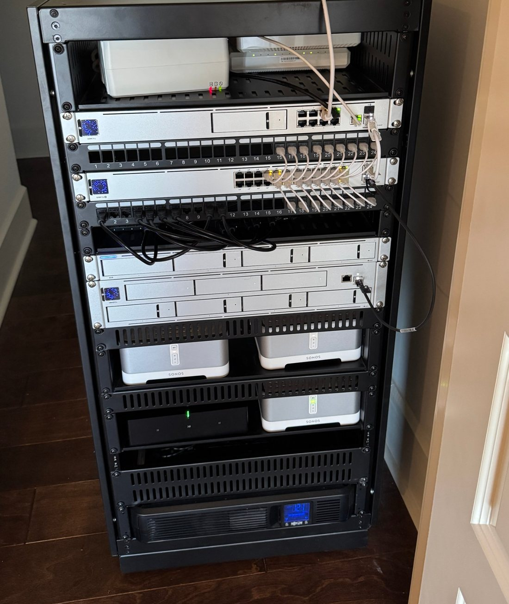

Your home depends on a reliable internet connection for almost everything. From streaming movies and gaming to working remotely, security cameras, and smart home automation, modern households rely on a growing number of connected devices.
While wireless networking provides convenience, a professionally installed wired network creates a dependable foundation for your home's technology.
At Wired Up Solutions, we specialize in residential Ethernet installation, Cat6 and Cat6A cabling, and structured network wiring throughout Denver, Colorado.
Whether you're building a new home in Cherry Creek, remodeling in Lakewood, or upgrading your home office in Golden, professional Ethernet wiring can improve connectivity and prepare your property for future technology.
1. What Is Residential Ethernet Wiring?
Residential Ethernet wiring uses network cables installed throughout your home to connect devices directly to your network.
Instead of relying entirely on Wi-Fi, computers, smart TVs, gaming consoles, wireless access points, and other compatible equipment can connect through dedicated Ethernet outlets.
These cables typically terminate at a centralized network location, where they connect to network switches, routers, and patch panels.
A professionally designed home network may include:
- Cat6 or Cat6A Ethernet cabling
- Wall-mounted Ethernet outlets
- Network switches
- Patch panels
- Structured wiring enclosures
- Network racks
- Power over Ethernet (PoE) equipment
- Wireless access points
- Security camera connections
The result is an organized network infrastructure designed to support your home's connected technology.
2. Why Choose Wired Ethernet Instead of Relying Entirely on Wi-Fi?
Wi-Fi is essential for mobile devices, but hardwired Ethernet provides several advantages for equipment that stays in one location.
More Consistent Network Performance
Wireless signals can be affected by walls, floors, neighboring networks, interference, and distance from your router.
Ethernet uses a physical connection, reducing exposure to these wireless conditions.
This can provide more consistent performance for applications that depend on reliable connectivity.
Lower and More Predictable Latency
Latency is the time it takes data to travel across a network.
For gaming, video conferencing, and other real-time applications, consistent latency is often just as important as download speed.
Hardwired Ethernet typically provides lower and more predictable local network latency than Wi-Fi.
Reduced Wireless Congestion
Every device connected through Wi-Fi uses wireless network capacity.
Connecting stationary devices through Ethernet can free up wireless airtime for smartphones, tablets, laptops, and other mobile equipment.
Reliable Connections for Important Devices
Home offices, streaming systems, security equipment, and smart home controllers can benefit from dependable hardwired connections.
3. Cat6 vs. Cat6A: Which Ethernet Cable Is Best for Your Home?
When planning residential Ethernet installation in Denver, two common cabling options are Cat6 and Cat6A.
Cat6 Ethernet Cabling
Cat6 is an excellent option for many residential applications.
It supports:
- Gigabit Ethernet connections up to 100 meters
- 10 Gigabit Ethernet over shorter distances under suitable installation conditions
- Home office networking
- Gaming and streaming
- Smart home equipment
- Wireless access point connections
For many homeowners, Cat6 offers a practical balance of performance, cost, and installation flexibility.
Cat6A Ethernet Cabling
Cat6A is designed to support 10 Gigabit Ethernet over distances up to 100 meters when installed with compatible components.
It can be an excellent choice for homeowners planning high-capacity network infrastructure.
Potential benefits include:
- Longer-distance 10 Gigabit Ethernet support
- Improved resistance to certain types of interference and crosstalk
- High-capacity network applications
- Future network expansion
Cat6A cable is generally thicker and may require more installation space.
Which Should You Install?
The best choice depends on your home's layout, cable lengths, budget, equipment, and future networking requirements.
At Wired Up Solutions, we evaluate your needs and recommend the appropriate cabling infrastructure rather than automatically specifying the most expensive option.
4. Where Should Ethernet Outlets Be Installed?
One of the biggest advantages of professional network design is planning Ethernet connections before you need them.
Home Offices
Hardwired connections can provide dependable connectivity for computers, docking stations, and video conferencing equipment.
Living Rooms and Home Theaters
Smart TVs, streaming devices, gaming consoles, and AV receivers can benefit from Ethernet connections.
Bedrooms
Ethernet outlets provide flexibility for future computers, televisions, and entertainment systems.
Wireless Access Point Locations
Installing Ethernet at planned access point locations allows you to create a high-performance whole-home Wi-Fi network.
Security Camera Locations
Compatible PoE security cameras can receive both power and data through a single Ethernet cable.
Centralized Network Equipment
A dedicated network rack or structured wiring enclosure provides an organized location for routers, switches, patch panels, and other equipment.

5. Why Power over Ethernet Matters
Power over Ethernet, commonly called PoE, allows compatible equipment to receive electrical power and network connectivity through Ethernet cabling.
PoE is commonly used for:
- Security cameras
- Wireless access points
- VoIP telephones
- Certain access control devices
- Compatible smart home equipment
Using PoE can simplify installation by reducing the need for separate power adapters at individual device locations.
The network equipment must support the appropriate PoE standard and power requirements.
6. Professional Structured Cabling vs. DIY Network Wiring
Installing Ethernet cables involves more than pulling wire through walls.
Professional structured cabling considers cable routing, termination quality, installation standards, testing, labeling, and equipment organization.
Proper Cable Routing
Network cables should be installed using suitable pathways while respecting building requirements and separation from electrical wiring.
Professional Termination
Poorly terminated cables can create intermittent connections, reduced speeds, and difficult-to-diagnose problems.
Cable Testing
Testing helps verify that installed connections meet the intended performance requirements.
Organized Network Equipment
Patch panels, labeled cables, and clean rack layouts simplify troubleshooting and future expansion.
Future Planning
Installing additional cable pathways or strategically located network outlets during construction can reduce future installation costs.
7. Ethernet Installation for New Construction and Existing Homes
New Construction
Building a new home offers an excellent opportunity to install structured cabling before walls are finished.
A comprehensive wiring plan can include home offices, entertainment areas, wireless access points, security cameras, and future expansion locations.
Existing Homes
Many existing homes can be retrofitted with Ethernet cabling.
Depending on construction, cables may be routed through accessible attics, basements, crawl spaces, or other suitable pathways.
A professional assessment helps determine the most practical installation method.
8. How Much Does Residential Ethernet Installation Cost in Denver?
The cost of installing Ethernet wiring depends on several factors:
- Number of network outlets
- Cable type
- Cable lengths
- Home construction
- Accessibility of installation pathways
- Network rack requirements
- Switches and other equipment
- Testing and configuration
- Wall repair requirements, if any
New construction wiring may be less labor-intensive than retrofitting a finished home.
Wired Up Solutions provides customized recommendations based on your property and networking requirements.
9. Frequently Asked Questions
Is Ethernet Faster Than Wi-Fi?
Ethernet often provides more consistent throughput and latency. Actual speeds depend on the network equipment, cabling, and connected devices.
Should I Install Cat6 or Cat6A?
Cat6 is suitable for many residential installations. Cat6A may be appropriate when longer-distance 10 Gigabit Ethernet support is a priority.
Can Ethernet Be Installed in an Existing House?
Yes. Installation feasibility depends on construction and available cable pathways.
Will Ethernet Improve My Internet Speed?
Ethernet can remove certain wireless limitations, but it cannot increase the speed supplied by your internet service provider.
Do I Still Need Wi-Fi If I Have Ethernet?
Yes. Most homes benefit from a combination of wired connections for stationary equipment and Wi-Fi for mobile devices.
Professional Residential Ethernet Installation in Denver, Colorado
A reliable connected home starts with the right infrastructure.
At Wired Up Solutions, we design and install residential wired networking systems that support your technology today while preparing your home for future expansion.
Our services include Cat6 and Cat6A Ethernet wiring, structured cabling, network racks, patch panels, PoE infrastructure, and home network upgrades.
We serve homeowners throughout Denver, Cherry Creek, Lakewood, Golden, Arvada, Littleton, and surrounding Colorado communities.
Wired Up Solutions – Smart, Made Simple.